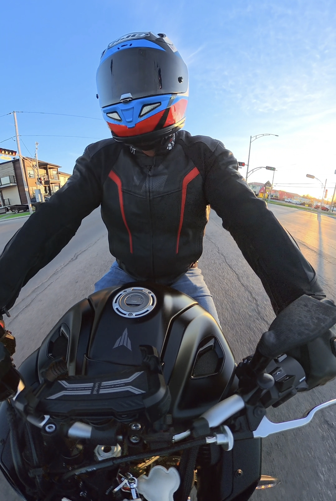
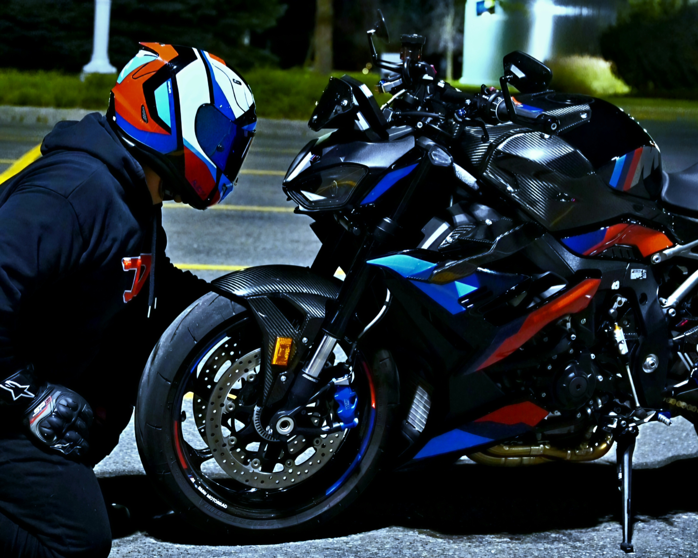
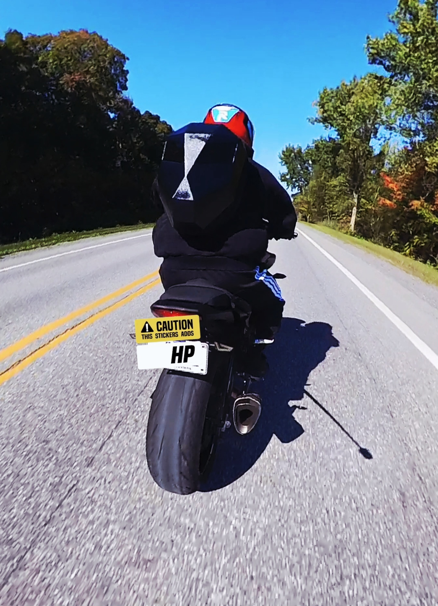
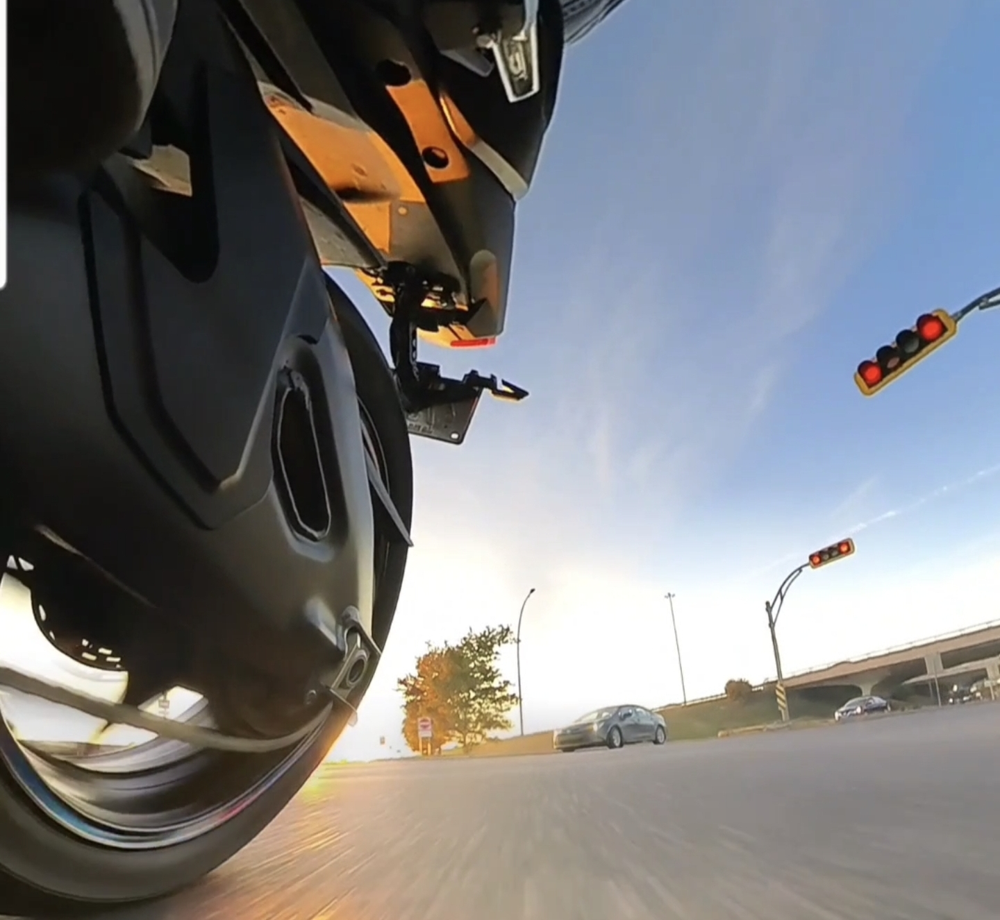
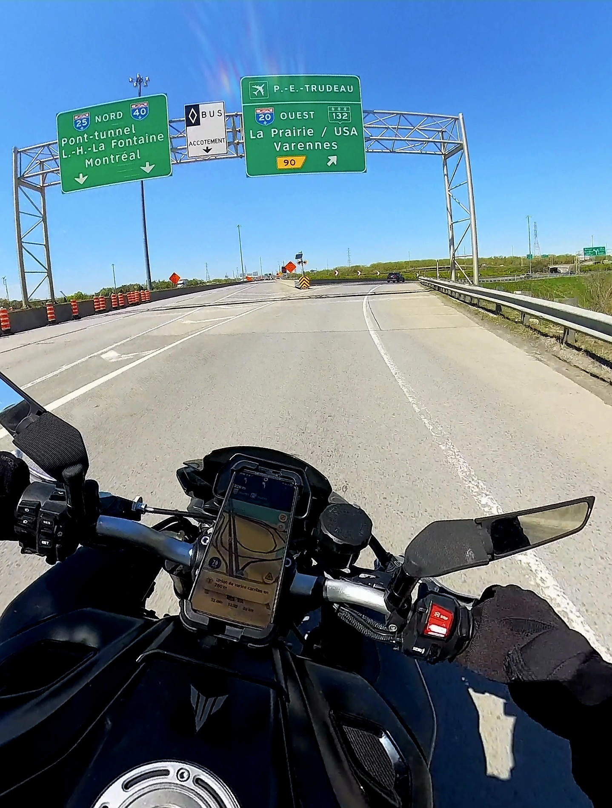

Les routes autour de Saint-Hyacinthe
Cette saison, j'ai surtout exploré les routes de ma région. La prochaine saison, direction la Gaspésie, Charlevoix et le Saguenay — restez à l'affût !
Mes sorties près de chez moi
Distances estimées depuis Saint-Hyacinthe, aller simple. Cliquez sur une route pour voir la vidéo associée sur la chaîne.

Mont-Saint-Hilaire
FacileUne courte sortie de fin de journée, parfaite pour un premier tour après le travail.

Mont Rougemont
FacileRoutes de campagne au milieu des vergers de la Montérégie. Idéal à l'automne.

Granby
FacileRoutes secondaires tranquilles à travers la campagne de la Montérégie.

Drummondville
FacileUn aller-retour rapide sur des routes dégagées, parfait pour une sortie improvisée.

Montréal
ModéréeCirculation urbaine et autoroute — un bon test de maniabilité pour la M 1000 R.

Mont-Tremblant
DifficileMa plus longue sortie à ce jour : routes de montagne, forêt dense et lacs à perte de vue.
Prochaine saison
Je n'ai pas encore eu le temps de m'attaquer aux grands classiques du Québec. La saison prochaine, direction la Gaspésie, Charlevoix et le Saguenay — ce sera documenté sur la chaîne dès le premier kilomètre.
Mont-Tremblant : ma plus longue sortie à ce jour
Environ 180 km depuis Saint-Hyacinthe pour découvrir les routes de montagne du parc national, à bord de la BMW M 1000 R. Une route que je recommande aux motocyclistes intermédiaires et avancés.
Regarder sur YouTube